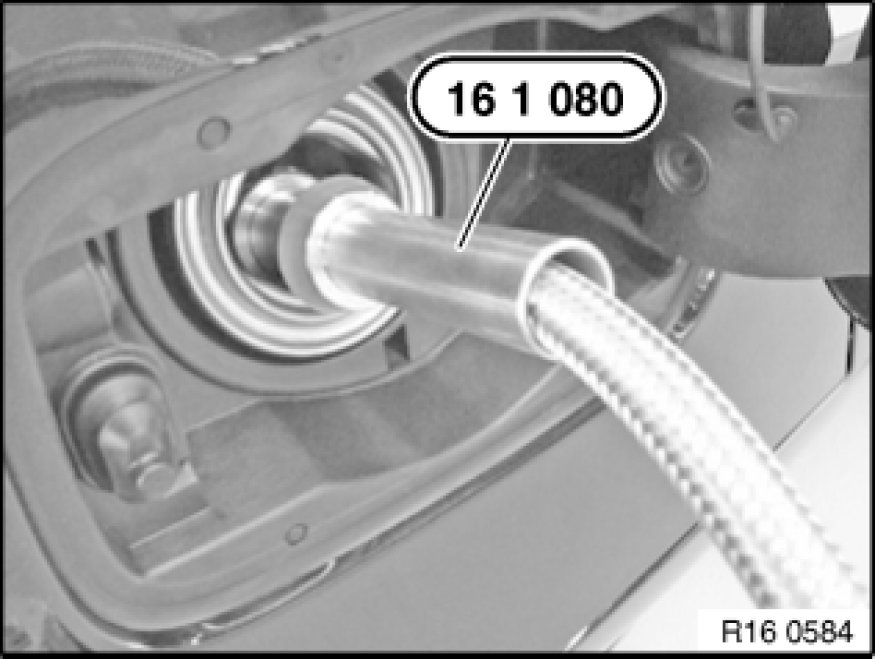
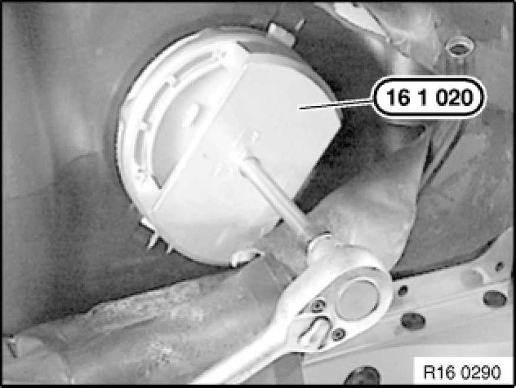
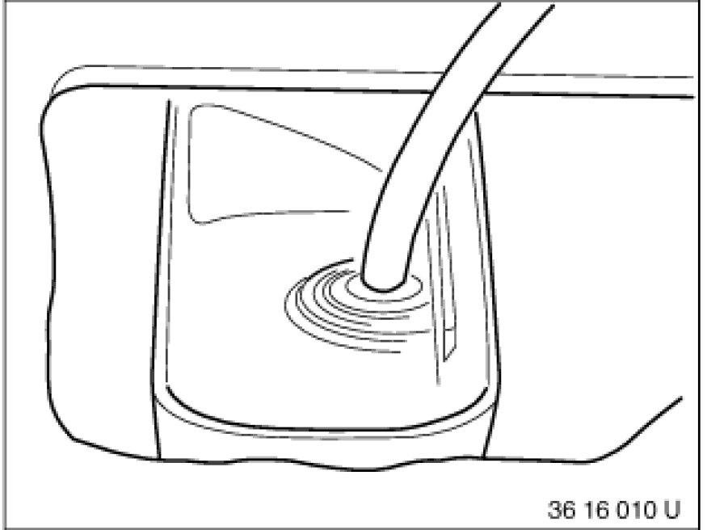

Procedures
16 00 005 - Draining and filling fuel tank

Special tools required:
- 16 1 020 16 1 020 Pin Wrench
- 16 1 080 16 1 080 Hose Guide

Recycling
Fuel escapes when fuel lines are detached. Have a suitable collecting container ready.
Catch and dispose of escaping fuel.
Observe country-specific waste-disposal regulations.

Important!
Ensure adequate ventilation in the place of work!
Connect the exhaust and extraction systems to the exhaust tailpipe.
Avoid skin contact (wear gloves)!
Do not damage non-return flap when pulling out extraction hose.
After installation of fuel tank/prior to first engine start-up:
- The electric fuel pump must not operate without fuel! After completing repairs but before starting the engine for the first time, fill the fuel tank with min. 5 l fuel through the fuel filler pipe.

Diesel vehicles:
Note:
Before starting the engine for the first time, if the tank has been run dry or drawn off, fill with diesel fuel and turn on ignition for approx. 1 minute. The fuel circuit is thus filled and vented, which results in the engine firing more quickly.
Drawing off fuel:
Start engine and allow to run.
Note:
The electric fuel pump runs.
In this way, the fuel is repumped through the suction jet pump from the left to the right side of the fuel tank.
Fuel can be drawn out of left and right sides of tank through filler neck, leaving only a small residue. The residual quantity is drawn off through the service opening (on right/left).

Insert special tool 16 1 080 16 1 080 Hose Guide into filler neck.
Special tool 16 1 080 16 1 080 Hose Guide has two different diameters for petrol/gasoline and diesel vehicles!
Slide extraction hose of extractor unit, refer to BMW Service Workshop Equipment and Planning Documentation, through special tool 16 1 080 16 1 080 Hose Guide into the fuel filler pipe, turning in the process if necessary.
Insertion length of extraction hose: 120-130 cm.
Draw off fuel as much as possible with extractor unit, refer to BMW Service Workshop Equipment and Planning Documentation.
Follow drawing off of fuel on fuel gauge in instrument cluster.

Drawing off residual fuel quantity:
Drawing off residual fuel amount is not included in the time value of this operation.
Important!
Ensure car interior is adequately ventilated.
Catch dripping fuel in a suitable container.
Release sealing ring with special tool 16 1 020 16 1 020 Pin Wrench and remove cap for service opening (left/right).
Tightening torque 16 14 2AZ 16 14 Fuel Pump.
Draw off residual fuel quantity through service openings.
Fuel filling:
Insert special tool 16 1 080 16 1 080 Hose Guide into filler neck.
Special tool 16 1 080 16 1 080 Hose Guide has two different diameters for petrol/gasoline and diesel vehicles!
Slide extraction hose of extractor unit, refer to BMW Service Workshop Equipment and Planning Documentation, approx. 40 cm into fuel filler pipe.
Fill fuel from suction extractor unit.

Drawing off after fault in suction jet pump:
Draw off right half of tank completely through fuel filler pipe.
Remove cap from left service opening.
Insert extraction hose through service opening in tank, fuel (also residual quantity) can be drawn off.